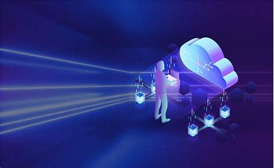

Our Services
Service 1: Managed IT Services
We provide comprehensive managed IT services that help businesses operate smoothly with minimal downtime. Our team handles everything from network management to cybersecurity, ensuring your IT infrastructure is secure and efficient.
Service 2: Cloud Computing
Leverage the power of the cloud with our cloud computing services. We help businesses migrate to cloud-based solutions, providing scalability, flexibility, and cost savings.
Service 3: IT Consulting
Our IT consulting services provide expert advice to help your business stay ahead of the technological curve. We offer strategic planning, technology assessments, and guidance on best practices to align IT with your business goals.
Service 4: Cybersecurity Solutions
Protect your business from cyber threats with our robust cybersecurity solutions. We offer comprehensive security assessments, monitoring, and incident response services to safeguard your digital assets.
Service 5: Business Continuity & Disaster Recovery
Ensure your business remains operational during unforeseen events with our business continuity and disaster recovery services. We help you develop and implement effective strategies to minimize downtime and data loss.
Service 6: Network Solutions
Optimize your network infrastructure with our network solutions. We design, deploy, and manage networks that provide reliability, security, and performance, tailored to meet your business needs.
Service 7: Hardware & Software Procurement
Streamline your hardware and software procurement process with our expert guidance. We help you select the best technology solutions that align with your business requirements and budget.
Service 8: Virtualization Services
Maximize your IT resources with our virtualization services. We help you create a more flexible and efficient IT environment, reducing hardware costs and improving scalability.